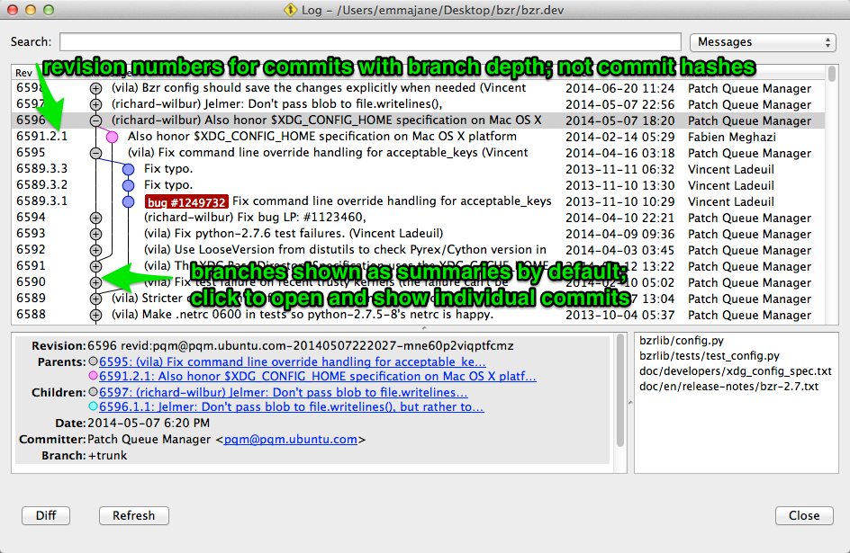
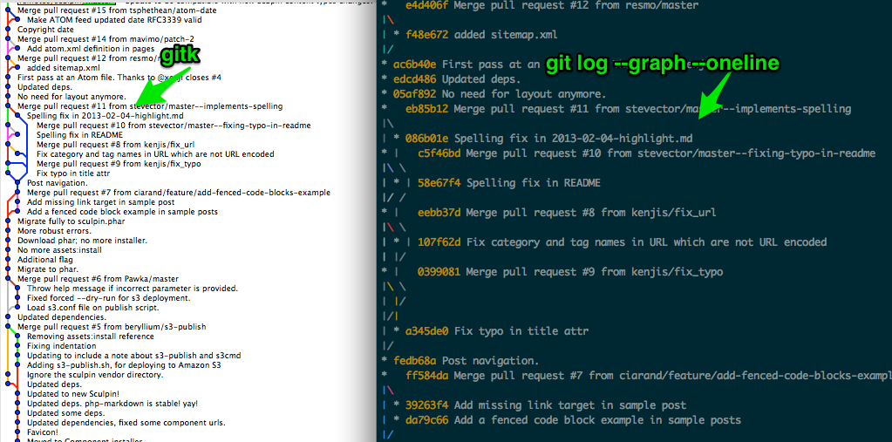

The Evolution of Social Coding with Git
This is a rough set of ideas about how open source software has changed in the last decade or so, and how it's affected our ability to work with the tools Git provides. It's not based on solid research or anything useful like that. Just complete and total speculation on my part. Feel free to flip tables, disagree at me on Twitter (@emmajanehw), and write your own response piece about how wrong I am.
From Patching Work Flow to Social Coding
When I first started contributing to open source projects (a little over a decade ago) there were two things I needed to learn when it came to version control: CVS, and reading a patch file which was attached to an email. Most of the projects I worked on used CVS, and as a result I taught my students how to use CVS as well. Most of the open source projects I followed, however, used a "patching" work flow. Indeed, Drupal still works this way.
As a result of the patching work flow, I became very comfortable reading diff files (and as a result, patches). It wasn't a lot of fun, but it was tedious work. (If you're not at all familiar with these tools, you can peek at Introduction to Using Diff and Patch for a decent overview of what was involved.) There are even tracking systems designed to work in conjunction with mailing list to capture patches sent to a mailing list and publish them to a web interface.
In this work flow, it makes the most sense to submit your idea
when you think you're close to a solution (or perhaps you're
stuck and need help). The granularity of what you submit would
not include the micro steps you took to get to this point;
rather, it would simply include the completed changes you made
against the original version of the files you were working
from. To support this work flow, there is even a git command,
am which splits email messages in a given mailbox into a
commit message, authorship information, and the patch file
itself. (You can read the man
page
for the command to get a better sense of the types of information it
can process.) Indeed the creator of Git, Linus Torvalds, is
notoriously picky about his commit
messages.
Some modern projects still use a patching work flow. Yes, dealing with patches is still tedious work as the patches need to be kept up-to-date by re-creating the files. (There is a very long guide on how to do this. Skim it to see how annoying this process is; don't worry if you don't understand all the steps involved as it's not important for this particular rant.) By using a patching work flow, however, the developers are still working with whole ideas when they apply changes to their software.
If we take a look at Git itself, many of the tools it gives us are optimized for dealing with whole ideas, and also creating whole ideas.
- Bisect:
A binary search of past commits which allows you to
determine when a bug was introduced. Git temporarily reverts
your code by individual commits and allows you to mark a
commit as "good" or "bad". To be effective, every commit
you're testing needs to have a working version of your code.
If, for example, you have a commit which is "stopped working
for the night" and the code is not actually in a functional
state, you end up wasting time finding the useful commits
where the code did actually work. A great example of how
bisectworks in practice is available here. - Rebase: Apply commits to a branch as if they happened in a different order than what the history suggests. This feature also allows you to combine (or separate) individual commits. By combining (or "squashing") multiple commits into one, you can come closer to the idea of a "whole idea" which I discussed previously. Rebasing is essentially re-drawing the graph of how a history of commits was performed. (Conceptually I hate rebasing. It feels like revisionist history. I also understand why it is a necessary tool and do use it when it is appropriate to do so.)
So we have these two concepts that are optimized for working with whole ideas. If we look at social coding today though, the experience is actually optimized on the conversation it takes to get to a whole idea. If you take a look at the GitHub Flow Guide you can see that the experience is optimized for a conversation including micro adjustments of code along the way. At the end of the conversation the branch where the conversation took place is merged into the main branch. This leaves a commit record which represents the development of the conversation. For all kinds of reasons, I think the history of the development of an idea is fascinating. I support this work flow.
Contrast this conversation-driven work flow to the patching work flow I described initially. In the patching work flow, only whole ideas (or the final patch) are committed to the master branch. The thinking process is not included in the commit history (although it might be included in the commit message).
Why does this matter? It matters because Git is optimized to work with individual commits.
Working With Whole Ideas
Compare the graphical log for Git and another distributed version control project, Bazaar. By default Bazaar shows only the final commit from a given branch. You need to click the branch to see the commits (or the conversation) which happened along the way.

In other words: the way Bazaar displays its commit history is optimized for the forking (and branching) work flows that GitHub and other social coding platforms promote. (Don't worry, this isn't going to turn into a Bazaar is Better Than Git article. I just wanted you to see an alternative way of perceiving the information.)
To contrast this, take a look at how Git displays commit history. Instead of showing groups of ideas, Git shows the individual commits along the entire length of a branch.

Not only that, but look at those useless default commit messages in Git where a merged happened ("Merge pull request issue_number from username/branchname"). It doesn't tell me anything about what the branch was about! For that I have to go back and read the commit messages in every commit up to that point. Beginning from the first commit for the branch where the idea was first introduced. If you're the person trying to understand why a branch was merged in by using the information stored in Git, good luck to you! Typically the best way to obtain that information is now the external ticketing system, not the code repository itself.
Once you understand how Git was used by its original creators, and for what experience it has optimized itself, you are left with two options: adopt a ticketing system and use its built-in features to track your changes to the code base over time; or insist your team adopt a rebasing work flow and attempt to re-create the patching work flow which presents whole ideas, not conversations, in the commit history. If you choose the first option, you are essentially throwing out any future hope of using Git's built-in tools to do anything useful with your commit history. You are also, essentially, committing yourself to vendor lock-in for your ticketing system because the legible version of history will be captured in the ticket system, not in the commit messages themselves.
Over time this will allow (or force?) Git to stagnate as a product, increasing our dependence on individual (often proprietary) systems to hold our institutional / code history. This is scary because these systems tend to be built around companies, and sometimes companies don't last forever.
Woah. That was kind of alarmist, wasn't it.
Making Git Social
So where do we go from here? We begin, ironically, with a conversation about what's important to us. I don't have any perfect answers for you, but hopefully I have some thought-provoking ideas.
- Determine, with your team, if it is more important to have an easy-to-use set of Git commands to allow the widest possible group of people to participate; or if it is more important to be able to move your project to a new code hosting platform if your current one disappears tomorrow. If ease-of-use trumps portability, by all means continue to work in whatever commit granularity is easiest for the contributor. But if it's more important to be able to migrate the history of your code to a new platform, consider adopting (and enforcing) a rebasing culture where each commit is as close as possible to a whole idea.
- If it's important to you that we continue to make coding social, and if ease-of-participation is important, consider the limitations of the defacto source control system we use. Git is open source. There are loads of fantastic graphical interfaces which have been built on top of Git, but they're all still limited to the same original concept that a commit is a whole idea. I've spent time looking, but I haven't found tools which do a great job of visualizing the whole ideas of a branch. We can, and should, build better tools which allow us to track changes to our code in a "modern" fashion and without having to rely on third-party systems.
- Currently, the default commit message for a merge sucks if you're using a social coding work flow (branching or forking as opposed to patching). There's no reason why we can't make Git better at dealing with how we want to work with it. I don't know what the default message for a merge should be. A duplicate of the last commit message in the branch that's being merged (potential problem: what about a three-way merge)? Maybe you like the final commit message as is and it works for your team...or maybe you've never even really thought about it because you have a GUI which sits on top of Git.
I'm sure there are other questions as well. But this is where I'm at right now. I don't really mean to seem like an alarmist. I just think it's an interesting pickle that we've gotten ourselves into. The way we code has become very social. It's centred around conversations and in many cases it's based around a Web interface. I don't necessarily think that's a bad thing, but I'm old enough to remember when SourceForge was still cool (sorry SourceForge!). I remember seeing the wave of projects move towards self-hosting and now the wave back to a centralized system. I think we're losing the benefits of a distributed version control system by becoming so attached to our centralized systems; but I think we're there because Git is so damned opaque. ("Git is easy to learn! It's just a directed acyclic graph of your commits!" Seriously? Fuck that.)
I want us to do better. We need to do better. And if we can't do better, I at least want it to be a conscious choice to have limited ourselves to the participation models that were created in 2005 by a kernel developer whose relationship with a proprietary software product went sour and whose community license was revoked. When you think about it, you know that we absolutely must do better and that we cannot allow ourselves to be complacent when it comes to our livelihoods and participation in the Web development, and open source software communities. It's really just a question of where we need to start so that we can fix the pickle we seem to have gotten ourselves into.